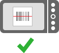

Viinikoodi lukee jatkuvasti näytön neliön alueelta viivakoodeja — aseta viivakoodi kokonaan neliön sisälle:

TÄRKEÄÄ: Viivakoodien lukeminen vaatii puhelimen kameralta autofocus-ominaisuutta.
Kun Viinikoodi lukee viivakoodin, se antaa äänimerkin ja menee automaattisesti viinin Alkon sivuille. Jos Alkon tuotenumero ei ole tunnettu, ohjelma voi pyytää sitä käyttäjältä.
Viivakoodien luku onnistuu parhaiten, jos pidät puhelinta vakaasti paikallaan ja annat kameran tarkentua viivakoodiin. Jos kameran ei tarkennu viivakoodin liikuta sitä joko lähemmäs tai kauemmas viivakoodista.